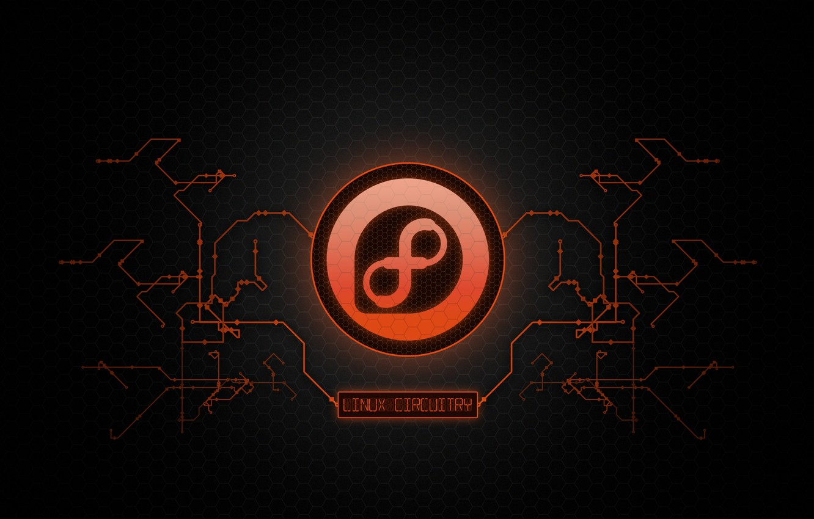

Why Should I Use Red Hat Linux?
Every technology in your IT stack needs to work together. And the workloads need to be portable and scalable across bare metal servers, virtual machines, containers, and private and public clouds. They need a modern, security-oriented operating system (OS). That OS is Red Hat® Enterprise Linux®.
Standard OS
With a standard OS underlying your workloads, you can easily move them across environments—where it makes sense for your business. Red Hat Enterprise Linux gives you a consistent, stable foundation across hybrid cloud deployments, along with built-in manageability and integration with the broader Red Hat management and automation portfolio.
Certified hardware,software,solutions
With thousands of certified hardware, software, and cloud solutions, Red Hat Enterprise Linux is your foundation for innovation, offering the latest stable development tools, container technologies, hardware, and cloud advancements.
According to Gartner, “The landscape of cloud adoption is one of hybrid clouds and multiclouds. By 2020, 75% of organizations will have deployed a multicloud or hybrid cloud model."
Every cloud is unique. That means you need a flexible—but stable—OS. Red Hat Enterprise Linux offers the flexibility of open source code and the innovation of open source communities, along with certifications from hundreds of public cloud and service providers. Red Hat has designed a container platform, Red Hat OpenShift, so you can build, deploy, and scale cloud-native applications in public clouds—allowing you to confidently implement the cloud strategy that works for you.
More Secured Features
A more secure datacenter begins with the operating system. Red Hat Enterprise Linux has built-in security features such as Security-Enhanced Linux (SELinux) and mandatory access controls (MAC) to help you combat intrusions and meet regulatory compliance. Red Hat Enterprise Linux is also Common Criteria and FIPS 140-2 certified, as well as being the first Linux container framework support to be Common Criteria-certified (v7.1).
Using a supported, enterprise open source OS, like Red Hat Enterprise Linux, means that thousands of developers are monitoring millions of lines of code in the Linux kernel—finding flaws and developing fixes before vulnerabilities become problems. Red Hat has dedicated teams of experts verifying those fixes and deploying patches without interrupting your applications, like those that helped handle Meltdown and Spectre a few years ago.
Trustworthiness
A Red Hat Enterprise Linux subscription helps you maintain critical applications for 10 years or more with deployment choices of major, supported versions and a commitment to preserve app stability with each minor update.
Red Hat is one of the leading contributors to the Linux kernel and associated technologies in the greater open source community, and has been since the beginning. Red Hat engineers help improve features, reliability, and security to make sure your infrastructure performs and remains stable—no matter your use case and workload.
However
With Red Hat, you get access to the benefits of open source for the enterprise—like community-driven upstream innovation—delivered with enterprise-level support to help your organization safely use open source technology.
 >
Which Image Should I Download?
To download the RHEL 8 ISO image at no cost at all, head over the Red Hat developer program and create an account. Fill in all the required details. Once done, proceed over to the Red Hat Login page to complete your profile by providing other details such as your local address.
When downloading Red Hat Enterprise Linux from the Customer Portal, there are multiple types of Red Hat Enterprise Linux 8 installation ISO images are available.
Installer
Download either the Binary DVD or Boot ISO image from the Customer Portal. Either of these can be modified using procedures in the guide; other available downloads, such as the KVM Guest Image or Supplementary DVD can not. The variant of the image (such as Server or ComputeNode) does not matter in this case; any variant can be used.
boot.iso
Used to install the operating system from another source (such as a http repository of the binary files). Can also be used to enter Rescue Mode.
Binary DVD
The discs required to install and use Red Hat Enterprise Linux. Can also be used to enter Rescue Mode.
WinSync Installer
Windows installer file (.msi) for the WinSync application, which is used in conjunction with Red Hat Enterprise Linux to sync a Windows Server Active Directory.
Source DVD
Source code (human-readable programming language instructions) for Red Hat Enterprise Linux, provided in compliance with the GNU General Public License which Red Hat Enterprise Linux is created under. There is no documentation for the source DVDs. These can be used to compile or develop your own software based off the Red Hat version.
P2V ISO
This ISO is used for converting your Physical RHEL system to a Virtual RHEL system
KVM Guest Image
You can use a ready RHEL KVM guest qcow2 image, as these images are configured with cloud-init and must take advantage of ec2-compatible metadata services for provisioning SSH keys in order to function properly. For more information see the Openstack Platform Guide


Desktop Environments Packages of Red Hat Linux
customizing and using GNOME 3, which is the only desktop environment available in RHEL 8. The basics of using GNOME Shell and displaying the graphics are given, as well as the instructions for system administrators for configuring GNOME on a low level and customizing the desktop environment for multiple users. also how to handle selected system administration tasks using the desktop environment.
Red Hat is committed to replacing problematic language in our code, documentation, and web properties.
Red Hat Enterprise Linux 8 is shipped with the default desktop environment GNOME 3.
GNOME 3 represents a presentation layer that provides a graphical user interface as well as the focused working environment, which enables you to access all your work from one place..
The GNOME environment provides the hot corner functionality, which is enabled by default. This means that when you move the cursor to the area of the top left corner and press the cursor in this area, the Activities Overview menu opens automatically.

Learn Basic Commands
When operating a Linux OS, you need to use a shell — an interface that gives you access to the operating system’s services. Most Linux distributions use a graphic user interface (GUI) as their shell, mainly to provide ease of use for their users.
Red Hat linux Commands
Red Hat Linux commands are nothing special from Linux commands they are the same so what you are going to learn here will work in every Linux system you may use, try over and over we are learning at the end and this is the most important part of it,
Performance Tools
Performance Co-Pilot (PCP), a suite of tools, services, and libraries for acquisition, archiving, and analysis of system-level performance measurements. Its light-weight, distributed architecture makes it particularly well suited to centralized analysis of complex systems.
Performance metrics can be added using the Python, Perl, C++ and C interfaces. Analysis tools can use the client APIs (Python, C++, C) directly, and rich web applications can explore all available performance data using a JSON interface.
SystemTap
These include optional pure user-space script execution, richer and more efficient Java probing, virtual machine probing, improved error messages, and a number of bug fixes and new features.
Valgrind
valgrind, an instrumentation framework that includes a number of tools to profile applications. This version is based on the Valgrind 3.9.0 release and includes numerous improvements relative to the Red Hat Enterprise Linux 6 and Red Hat Developer Toolset 2.1 counterparts, which were based on Valgrind 3.8.1.

Vulnerability Assessment Tools
Vulnerability assessment tools are designed to automatically scan for new and existing threats that can target your application. Types of tools include: Web application scanners that test for and simulate known attack patterns. Protocol scanners that search for vulnerable protocols, ports and network services.
Wireless Tools

Wireless tools for Linux is a collection of user-space utilities written for Linux kernel-based operating systems to support and facilitate the configuration of device drivers of wireless network interface controllers and some related aspects of networking using the Linux Wireless Extension.
Website Penetration

Web application penetration testing is the process of using penetration testing techniques on a web application to detect its vulnerabilities. It is similar to a penetration test and aims to break into the web application using any penetration attacks or threats.
The assessment is undertaken to check for holes and potential vulnerabilities, the penetration testing actually attempts to exploit the findings.
Exploitation
An exploit is a piece of software, a chunk of data, or a sequence of commands that takes advantage of a bug or vulnerability to cause unintended or unanticipated behavior to occur on computer software, hardware, or something electronic.
The Basics of Troubleshooting
Troubleshooting Linux can be very confusing due to all of the moving parts. This doc will aim to cover as much as possible while still being understandable. If you believe something is missing or could be improved, please submit an issue to help to try and get this to be as complete as possible.
Log files
/etc/rsyslog.conf - list of log files can be found
/etc/rsyslog.conf - main configuration file for rsyslog
@(zNUMBER)HOST:PORT - forward syslog messages to a remote machine
$outchannel NAME, FILE_NAME, MAX_SIZE, ACTION - define an output channel in /etc/rsyslog.conf
FILTER ^EXECUTABLE; TEMPLATE - the system() call to execute the program in shell
:PLUGIN:DB_HOST,DB_NAME,DB_USER,DB_PASSWORD;TEMPLATE - syslog messages can be directly written into a database table using the database writer action
When accepting messages from any host, and using the shell execute action, you may be vulnerable to command injection. An attacker may try to inject and execute commands in the program you specified to be executed in your action. To avoid any possible security threats, thoroughly consider the use of the shell execute action..
Commands and processes
Anything mentioned should have their main page looked at for more details. Additionally, if there is an issue with a graphical tool that does not display an error try running it through the command line.
Installations Failures
There can be a wide variety of reasons for a Red Hat Linux installation to fail. This could include issues such as a corrupt or incomplete ISO download, not enough disk space on the target machine, etc. The following article will give you some pointers on what to look for when your Red Hat Linux installation has failed. The following is an example of the dreaded “Red Screen”, indicating the installation encountered a problem.


Some Basic Knows Before Development
I don't know where you are on your programming journey or which language(s) you are interested in but many computer science departments are quickly learning what the community has known for a while, that Python is a fantastic language for beginners and power users alike. Your basic Python tools are already installed on any Linux.
But if you really just want to learn programming, then for the sake of security, please do it on a more generic Linux. My personal preference is to run Red Hat but that could be anything. Then install Red Hat as a virtual machine inside that using either VirtualBox .
Red Hat (or whatever) is where you set up your development environment and you only start the Red Hat instance when you want to explore the penetration testing tools. It's a fairly elegant solution, I think. The reason for this is because you don't want the penetration testing tools just laying around for a potential bad guy (or girl) to leverage against you.
For even better security and portability, you could even set up your development environment in a second virtual machine running on top of the base OS. Best of wishes.
Section Item 9.1 (FAQ Category One)
How can a user rename a file in Red Hat Linux?
To rename the file, you need first to open the shell command line of Red Hat Linux. There you need to use the “mv command.” Then the command will take to the original file and the newly named file. You need to check the parameters before renaming the files.
What is the command to install Rpm packages?
To install Rpm packages in CentOS and Red Hat, you can use yum and rpm command lines.
How to create a partition of 100MB and mount it?
Use the command “partprobe” and then mkfs -t ext3 /dev/hda?
First, to create a new partition, the users need to use fdisk /dev/had.
Now, for the new partition, type “n.”
Then, the users need to select between primary or logical partition. There, press “1” to go for a logical partition.
It will then ask to choose the starting cylinder type. Keep it default by pressing “Enter.”
Now, the users need to put the size. Put +100M then press “P” for verification of the partition list and name.
To write the partition on the partitions table, press “W.”


.jpg)